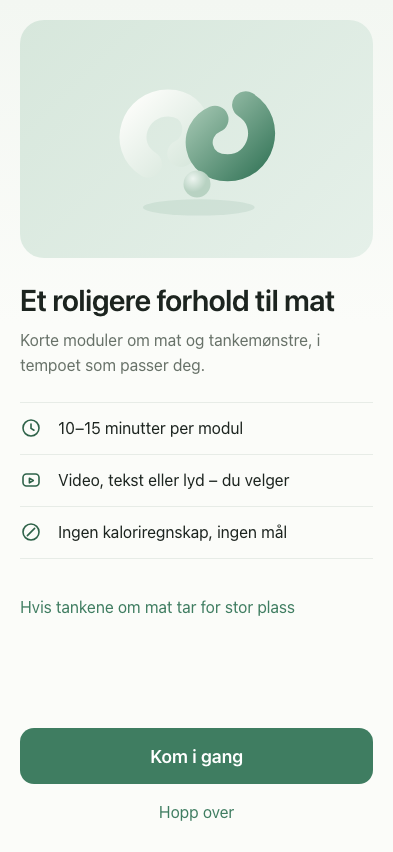
Designreview · 1B.1 Botanical
Florir, skjerm for skjerm
Én stabil post per hovedskjerm. Åpne den klikkbare versjonen for å teste flyten, og bruk skjermnøkkelen når du gir tilbakemelding.
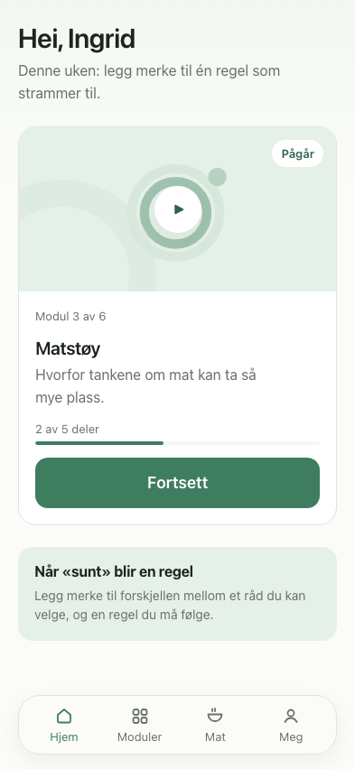
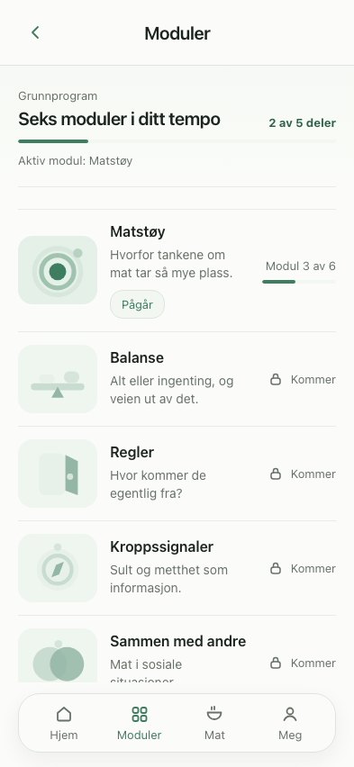
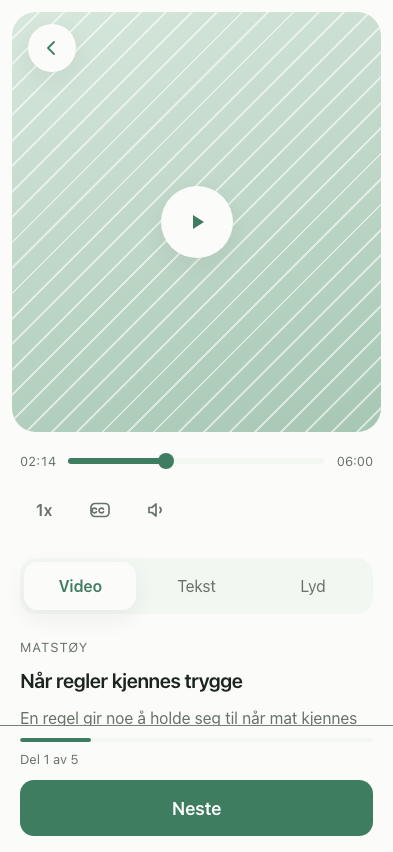
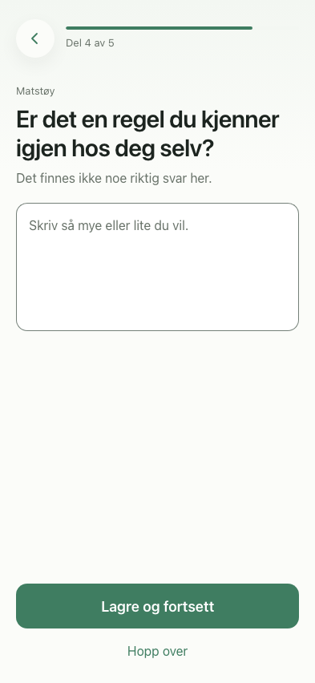
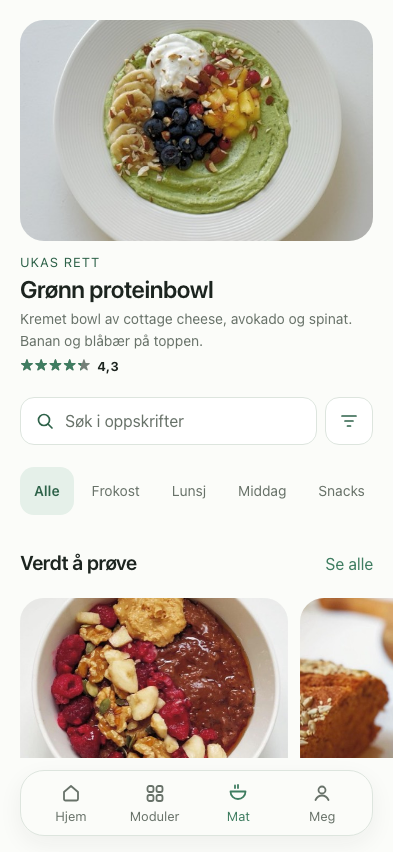
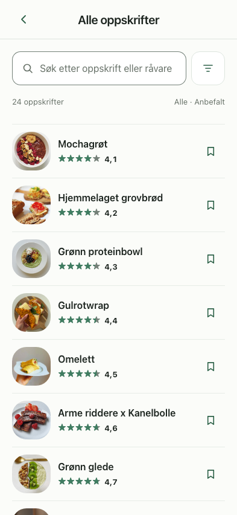
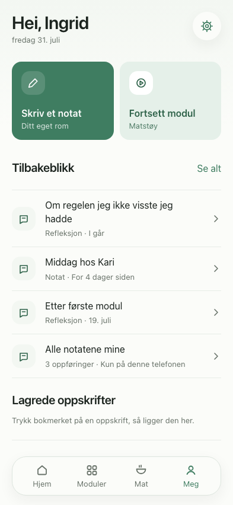
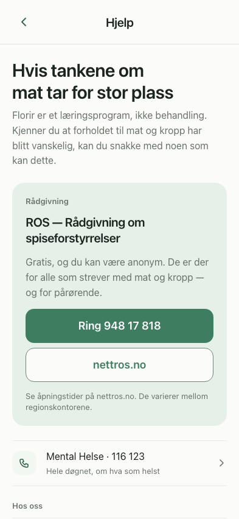
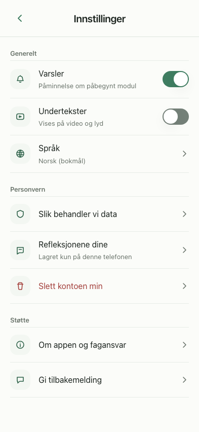
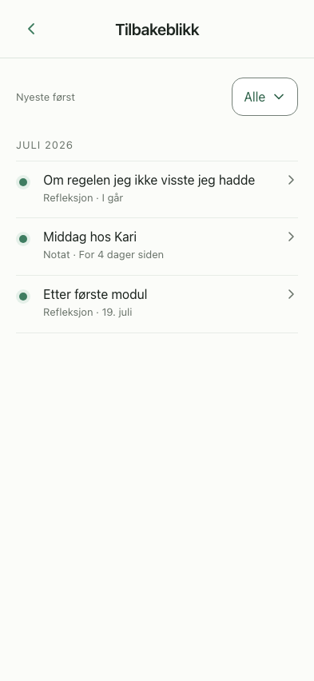
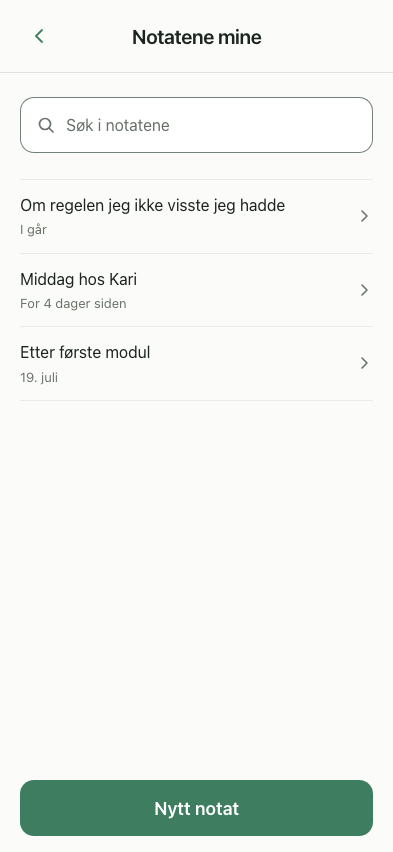
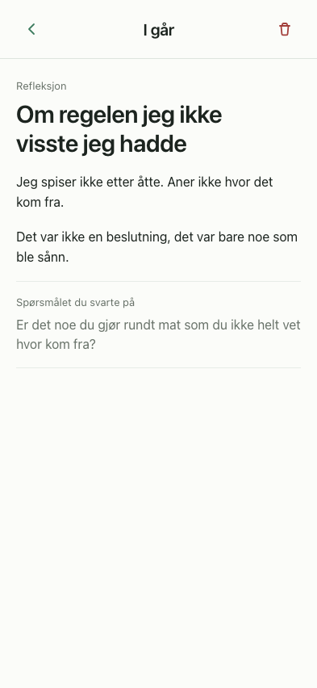
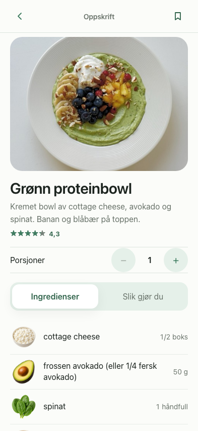
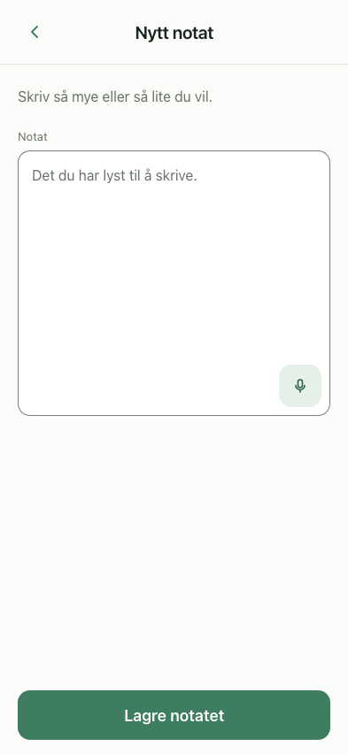
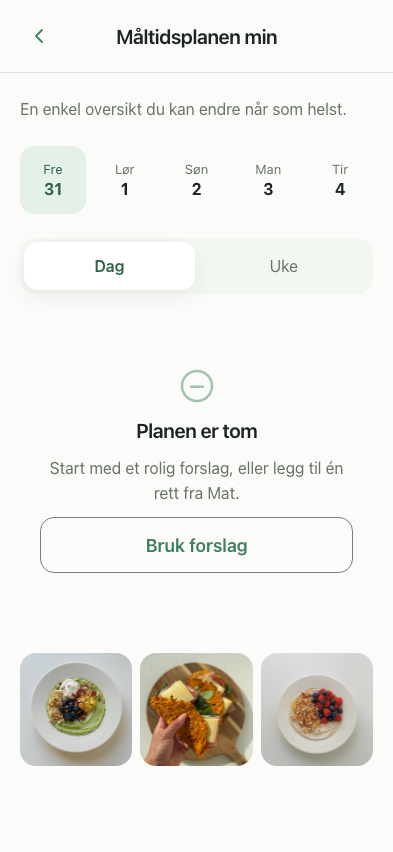
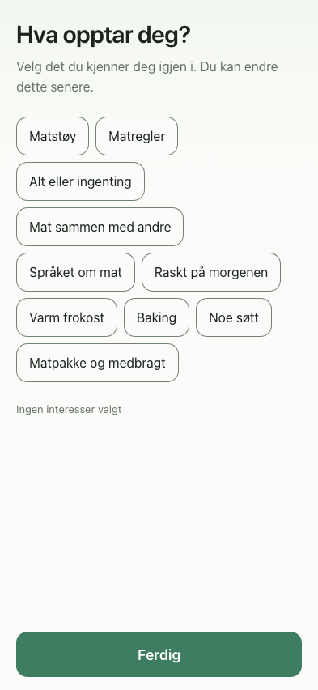
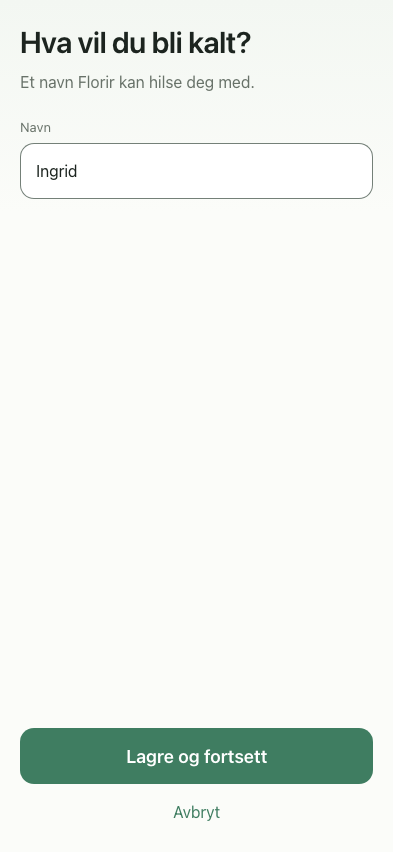
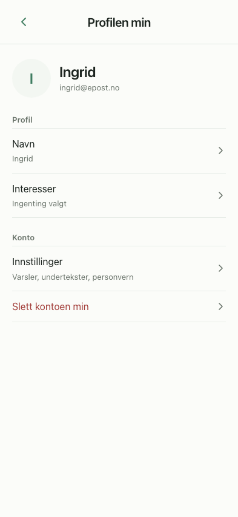